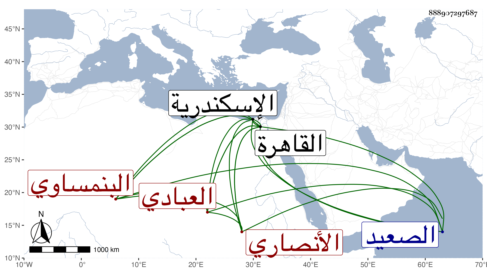

0902Sakhawi.DawLamic.ITO20230111-ara1.EIS1600.888907297687
Biography ID: 888907297687
131
محمد بن عبد الكافي بن عبد الله بن أبي العباس أحمد بن علي بن محمد محب الدين وربما لقب شمس الدين أبو الطيب بن الصدر بن الجمال الأنصاري العبادي البنمساوي بكسر الموحدة والنون وسكون الميم ثم مهملة نسبة لقرية تعرف قديما ببنمسوية واشتهرت ببني سويف حتى صار يقال في النسبة إليها السويفي القاهري نزيل القطبية الشافعي الماضي أبوه ويعرف كهو بالسويفي . ولد تقريبا سنة سبعين وسبعمائة أو بعدها بالقاهرة ونشأ بها فحفظ القرآن عند المؤدب الشمس القاياتي والشهاب بن البدر الحنفي وحفظ العمدة والتنبيه والصلاح البلبيسي والشمس بن ياسين الجزولي والمطرز والآمدي وابن حاتم وآخرين ، ودخل اسكندرية والصعيد وغيرهما وأضر من سنة خمس وأربعين وأعلمت به الجماعة وحدث بالكثير سمع منه الأئمة وسمعت منه أشياء وارتفق لفقره بذلك ، وكان عالي الهمة صبورا على الأسماع . مات بالقاهرة في ربيع الأول سنة اثنتين وخمسين رحمه الله .
